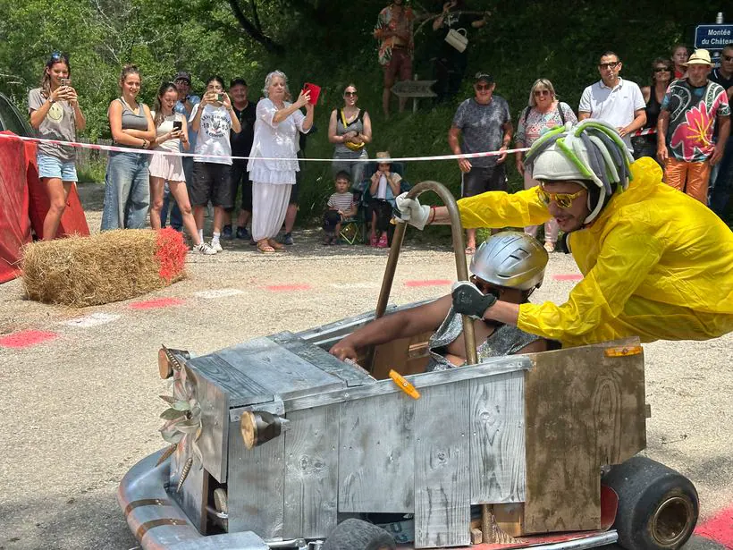
Été
La montée du château
La course de caisses à savon dévale les ruelles.
Vallée de la Drôme — Le Diois
Un village du Diois entre vignes exposées plein sud, falaises calcaires et le murmure de la Drôme.
Posé sur les premières pentes du Diois, à quelques kilomètres de Die, Barsac regarde la vallée entre les contreforts du Vercors. Son ruisseau partage le village en deux quartiers autour de l’église.
Petite par sa population, la commune est grande par son caractère : depuis le coteau, le regard porte sur les vignes et la silhouette des Trois Becs.
La vie pratique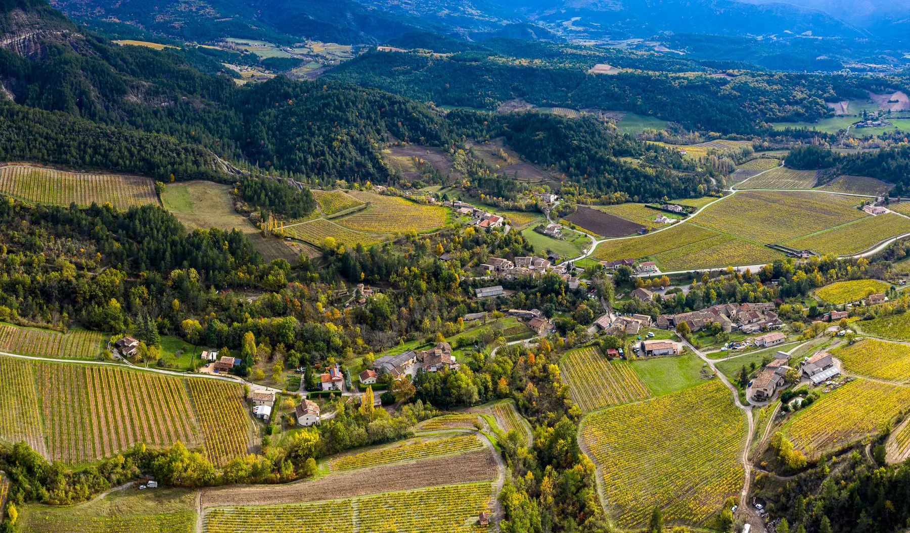
Population municipale 2023 : Insee. Données touristiques : Office de tourisme du Pays Diois.
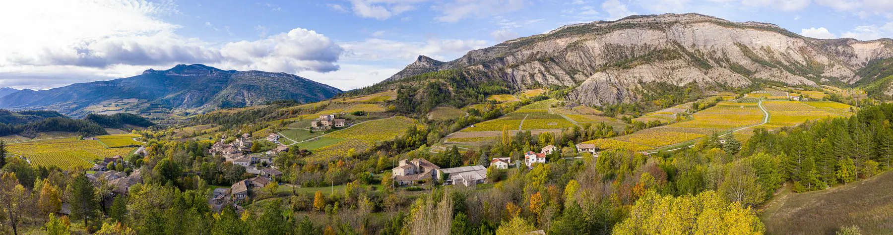
« On respire ici comme nulle part ailleurs. »
Choisissez votre demande : son objet sera déjà sélectionné dans le formulaire. Toutes les démarches sont envoyées par courriel à la mairie.
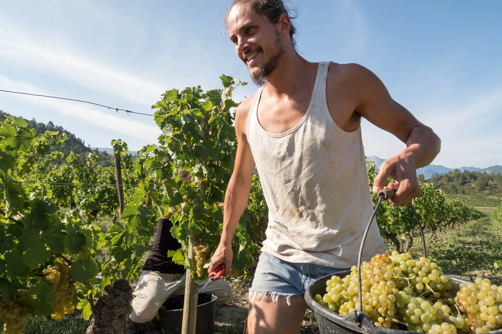
Quelque 150 hectares de vignes exposées plein sud s’étagent entre marnes et pins noirs. Clairette et muscat blanc à petits grains donnent des vins frais, vifs et marqués par l’altitude.
Des vendanges de septembre à la taille de l’hiver, le calendrier du village suit celui de la vigne. Huit caves indépendantes travaillent le coteau et ouvrent volontiers leur porte aux curieux.
Trouver un producteur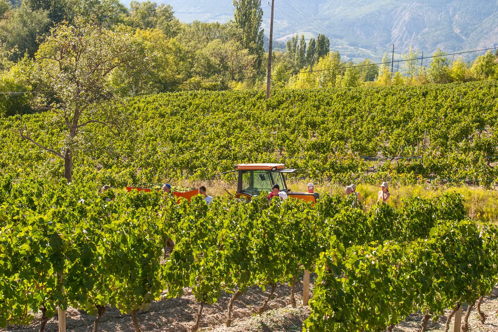
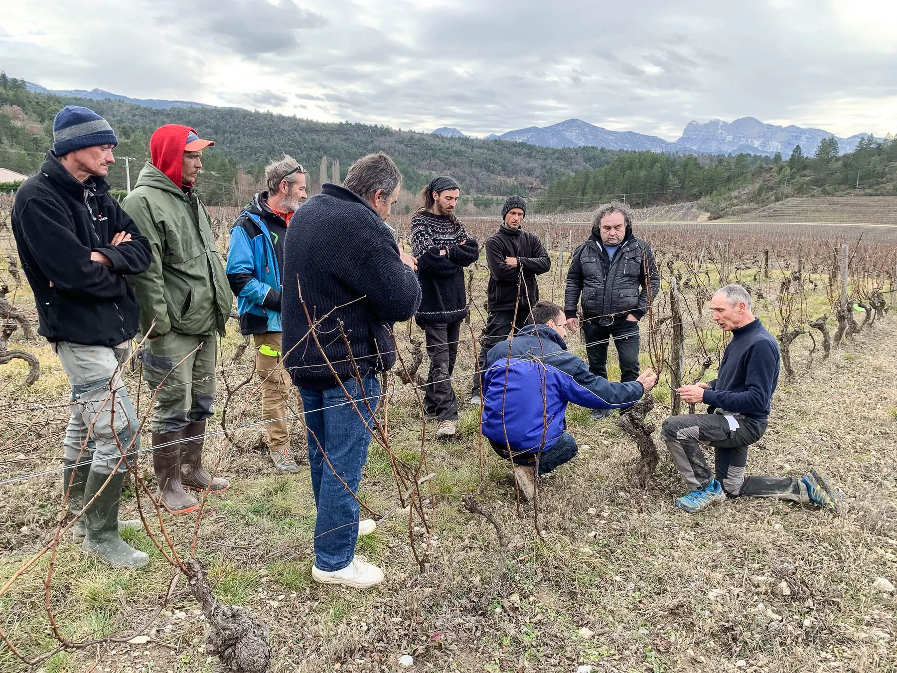
Marchés, concerts dans les caves, courses de caisses à savon et spectacles : les saisons sont prétexte à se réunir.

La course de caisses à savon dévale les ruelles.
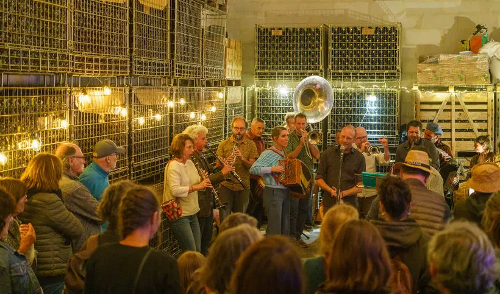
Fanfares, accordéon et vin nouveau donnent le rythme.
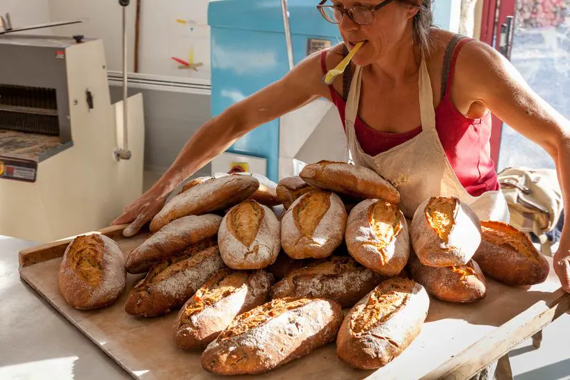
Pain, fromages, miel et légumes : le bon et le proche.
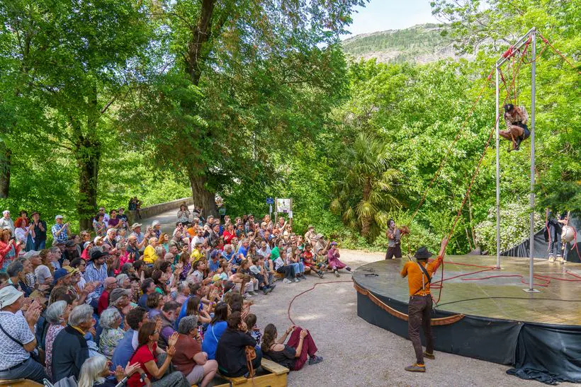
Cirque, théâtre de rue et musique vivante.
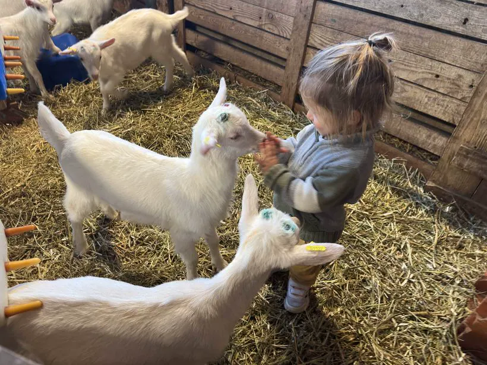
Les chevreaux sont les vedettes des portes ouvertes.
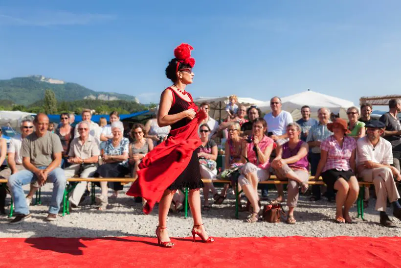
Bals, repas partagés et animations.
L’agenda de Barsac et du Diois, publié via IntraMuros.
Recevoir les informations avec IntraMurosInformations municipales et nouvelles de la vie locale, publiées via IntraMuros.
Consultez les délibérations, arrêtés et publications légales.
Ouvrir dans une nouvelle pageLes Chemins de la Clairette serpentent entre les vignes, la Drôme invite à la baignade et Die ouvre les portes du Vercors.
Pour toute démarche, vous pouvez préparer un courriel ci-dessous.
Un message pour la commune ?
Votre message sera adressé à la mairie et transmis selon son objet.
Préparer mon courrielRenseignez votre demande puis votre application de messagerie s’ouvrira avec le destinataire, l’objet et le message déjà préparés. Aucune information n’est enregistrée par ce site.